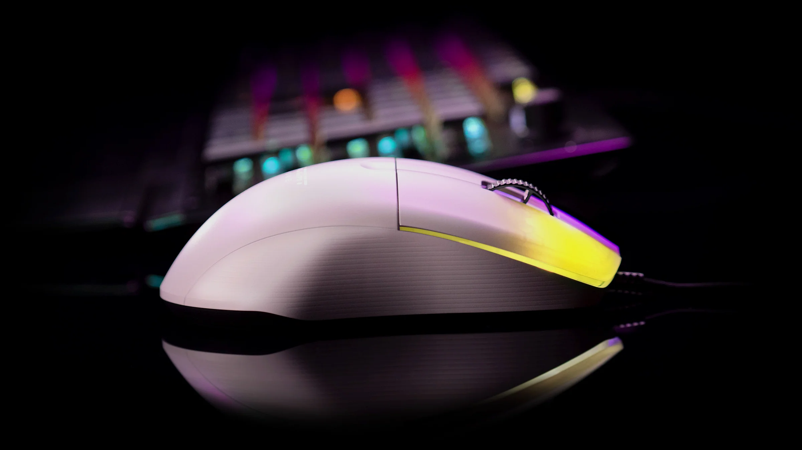
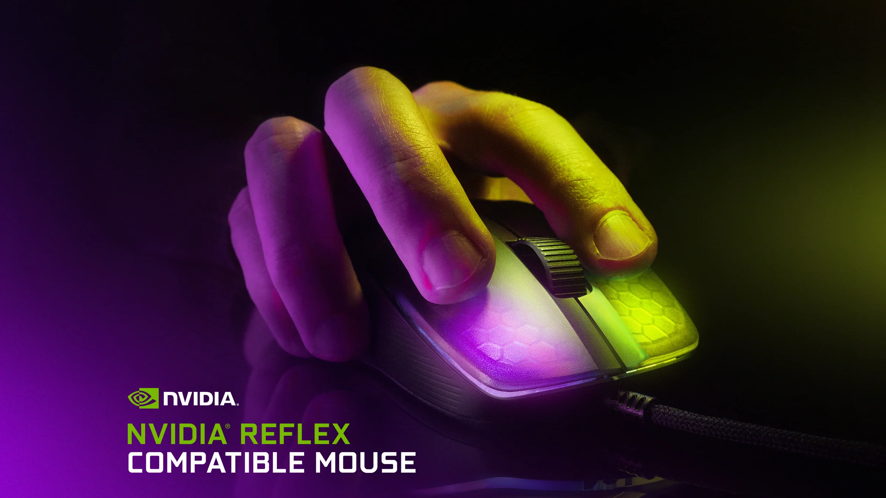
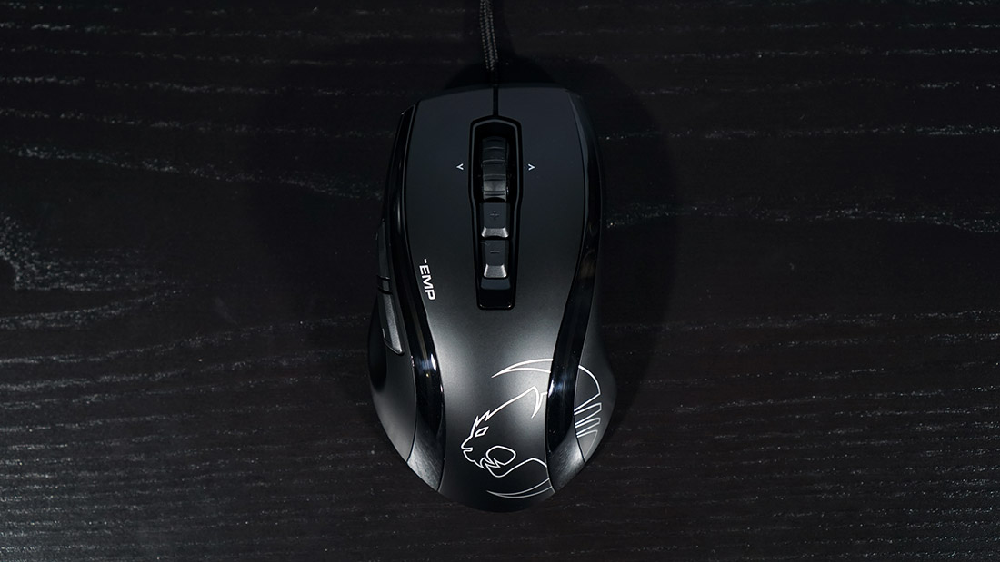
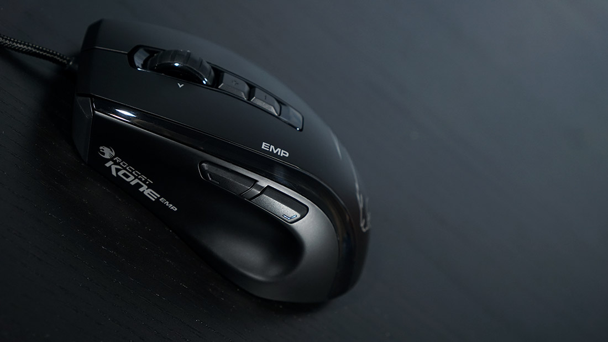
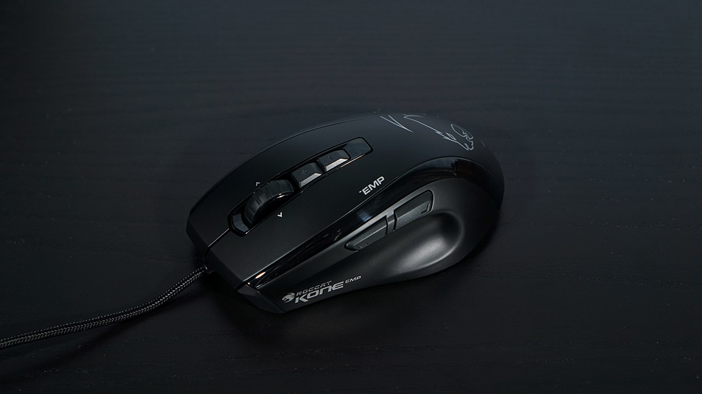

This is the top best mice for playing Minecraft.
I'll show you cool mice that are suitable for construction, drag click, batter and jetter
Roccat kone pro
Meet the ROCCAT® Kone Pro Lightweight Optical Ergonomic Performance Gaming Mouse with RGB Lighting. Perfected through 14 years of craftmanship, at just 66g the Kone Pro is the most lightweight and advanced gaming mouse we’ve ever made. It utilizes the Titan Switch Optical, AIMO RGB lighting, our 19K DPI Owl-Eye Sensor, PhantomFlex™ Cable and superior heat-treated PTFE glides
autor video:ROCCAT


Roccat kone EMP
The Roccat Kone EMP is a large, ergonomic mouse for right-handers. If you're not used to it, it may seem like this is a left-handed mouse, but that's not the case. In addition to the main and side buttons, the mouse has a 4-position wheel (vertical and horizontal scrolling) and two additional keys behind the wheel
autor video:
PRO ДЕВАЙСЫ



Glorious Model D
The Glorious Model D is a large ergonomic mouse with a standard 5-button layout. At the top of the device there is a dpi switch button. The device is equipped with Pixart 3360 optics, which has already become the de facto standard for gaming rodents, “omrons” for 20 million clicks and a mechanical encoder.